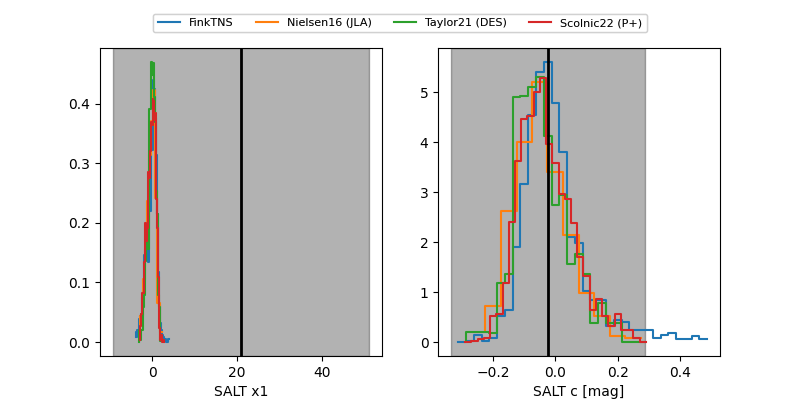

FINK: ZTF25abpstgg
Lasair: ZTF25abpstgg
ALeRCE: ZTF25abpstgg
TNS: 2025xhy
YSE: 2025xhy
ZTF25abpstgg (ztf,fink)
2025xhy (tns,yse)
equatorial (ra, dec) = (276.4455,+29.00166)
galactic (l, b) = (56.9310,+17.94065)

last ztfg=19.83, ztfr=19.92
1 ztfg, 2 ztfr detections